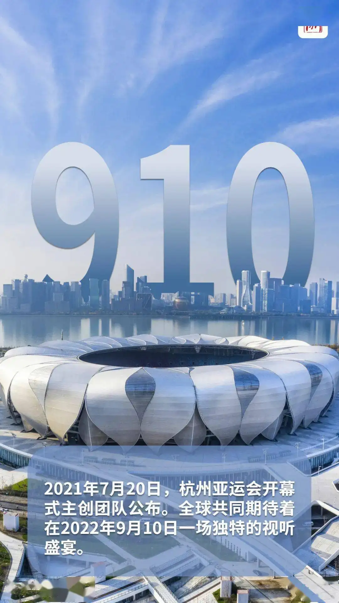
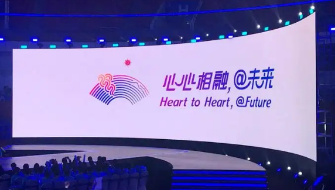

基本介绍
杭州2022年第19届亚运会(The 19th Asian Games Hangzhou 2022),简称“
杭州2022年亚运会”,将在中国浙江杭州举行,原定于2022年9月10日至25日举办;2022年5月6日亚奥理事会宣布延期举办,
赛事名称和标识保持不变，日期将由亚奥理事会、中国奥委会、杭州亚组委协商一致后公布。
截至2020年12月,本届亚运会共设40个竞赛大项,包括31个奥运项目和9个非奥运项目。同
时,在保持40个大项目不变的前提下,增设电子竞技、霹雳舞两个竞赛项目。
杭州2022年亚运会以“中国新时代·杭州新亚运”为定位、“中国特色、浙江风采、杭州韵
味、精彩纷呈”为目标，秉持“绿色、智能、节俭、文明”的办会理念，坚持“以杭州为主，全省共享”的办赛原则。


心心相融，@未来
Heart to Heart, @Future
口号的亮点是@,这是全球互联网通用符号，也契合了杭州互联网之城的特征。
“心心相融(Heart to Heart)”,意在各国人民在亚运会这个大舞台上交融,也体现亚奥理事会大家庭团结向上、紧密相拥、充满活力的愿景，倡导全民健身和投身奥林匹克运动；
“@未来（@Future)”,传递自信乐观、不畏挑战、共迎美好的期许,与“永远向前”以及“更快、更高、更强”的精神契合一致，也寄托着面向未来，共建人类命运共同体的良好愿望。